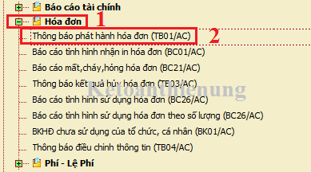
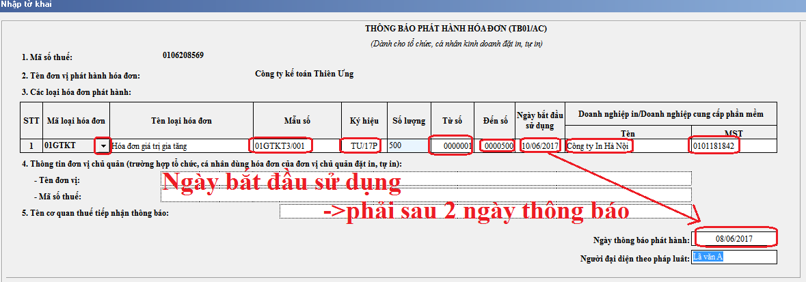

Trước khi sử dụng hóa đơn GTGT đặt in Doanh nghiệp phải làm thủ tục Thông báo phát hành hóa đơn gửi đến cơ quan thuế quản lý trực tiếp. Kế toán Diệu Tâm xin hướng dẫn cách làm thủ tục thông báo phát hành hóa đơn qua mạng năm 2018
Theo khoản 3 điều 1 Thông tư 37/2017/TT-BTC quy định:
“4. Thông báo phát hành hóa đơn và hóa đơn mẫu phải được gửi đến cơ quan thuế quản lý trực tiếp chậm nhất hai (02) ngày trước khi tổ chức kinh doanh bắt đầu sử dụng hóa đơn.
- Thông báo phát hành hóa đơn gồm cả hóa đơn mẫu phải được niêm yết rõ ràng ngay tại các cơ sở sử dụng hóa đơn để bán hàng hóa, dịch vụ trong suốt thời gian sử dụng hóa đơn, Cơ quan quản lý thuế có trách nhiệm hướng dẫn tổ chức kinh doanh thanh lý hợp đồng in khi đã lập tờ Thông báo phát hành hóa đơn đối với hợp đồng đặt in hóa đơn không quy định thời hạn thanh lý hợp đồng (đối với hóa đơn đặt in) và không bị xử phạt.
- Trường hợp khi nhận được Thông báo phát hành do tổ chức gửi đến, cơ quan Thuế phát hiện thông báo phát hành không đảm bảo đủ nội dung theo đúng quy định thì trong thời hạn hai (02) ngày làm việc kể từ ngày nhận được Thông báo, cơ quan thuế phải có văn bản thông báo cho tổ chức biết. Tổ chức có trách nhiệm điều chỉnh để thông báo phát hành mới.”
A. Hồ sơ thông báo phát hành hóa đơn bao gồm:
1. Thông báo phát hành hoá đơn theo Mẫu TB01/AC (Ban hành theo Thông tư Số 26/2015/TT-BTC ban hành ngày 27/02/2015). Tải về tại đây: Mẫu thông báo phát hành hóa đơn
- Nội dung ghi trên Thông báo phát hành hóa đơn gồm:
+ Tên đơn vị, mã số thuế, địa chỉ, điện thoại, tên loại hóa đơn, ký hiệu hóa đơn, ký hiệu mẫu số hóa đơn, ngày bắt đầu sử dụng, số lượng hóa đơn thông báo phát hành (từ số... đến số...)).
+ Tên và mã số thuế của doanh nghiệp in hoá đơn (đối với hoá đơn đặt in),
+ Ngày lập, tên, chữ ký của người đại diện theo pháp luật và dấu của đơn vị.
2. Hoá đơn mẫu (do nhà in cung cấp): Là bản in thể hiện đúng, đủ các tiêu thức trên liên của hóa đơn giao cho người mua loại được phát hành, có số hóa đơn là một dãy các chữ số 0 và in hoặc đóng chữ “Mẫu” trên tờ hóa đơn.
3. Quyết định của cơ quan thuế về việc cho DN sử dụng hóa đơn đặt in (Khi DN nộp hồ sơ xin sử dụng hóa đơn đặt in, thì cơ quan thuế sẽ kiểm tra và quyết định có được sử dụng hay không)
--------------------------------------------------------------------------------------
B. Cách nộp Thông báo phát hành hóa đơn + Hóa đơn mẫu qua mạng
Cần chuẩn bị:
- Chữ ký số (Token)
- Thông báo phát hành hóa đơn bản mềm (XML)
- Hóa đơn mẫu và Quyết định được sử dụng hóa đơn SCAN -> đính kèm vào file Word.
Bước 1: Làm Thông báo phát hành hóa đơn trên HTKK:
- Đăng nhập vào phần mềm HTKK -> "Hóa đơn" -> "Thông báo phát hành hóa đơn (TB01/AC)

- Nhập các thông tin bắt buộc vào Thông báo phát hành:

- Sau khi đã nhập xong các bạn chọn: "Kết xuất XML" để có file chuẩn bị nộp qua mạng
--------------------------------------------------------------------------------------
Bước 2: Đăng ký nộp Thông báo phát hành hóa đơn qua mạng:
- Truy cập vào website: nhantokhai.gdt.gov.vn hoặc thuedientu.gdt.gov.vn (Nhớ là phải mở bằng trình duyệt: Internet Explorer)
Chú ý: Các tỉnh/thành phố: Hà Nội, Tuyên Quang, Hà Nam, Hải Phòng, Nam Định, Ninh Bình, Thái Bình, Vĩnh Phúc, Quảng Ninh, Sơn La, Thanh Hoá, Nghệ An, Hà Tĩnh, Quảng Bình, Đồng Nai sử dụng hệ thống trên thuedientu.gdt.gov.vn để thực hiện khai thuế, nộp thuế, hoàn thuế điện tử.
- Các tỉnh/thành phố còn lại sử dụng hệ thống trên nhantokhai.gdt.gov.vn
-> Chi tiết các bạn có thể xem cụ thể trên 2 website trên nhé.
- Tiếp đó, Đăng nhập MST của DN.
- Tiếp đó -> "Tài khoản" -> "Đăng ký thêm tờ khai":
.png "thủ tục nộp hóa đơn mẫu qua mạng")
- Tiếp đó: Tích chọn "Thông báo phát hành hóa đơn" -> Tiếp tục

- Sau khi đã đăng ký xong -> Tiếp đó các bạn Nộp Thông báo phát hành hóa đơn: Vào mục "Nộp tờ khai" -> Tải lên -> Giống như việc các bạn nộp Tờ khai thuế GTGT thôi nhé
---------------------------------------------------------------------------------
Bước 3: Nộp Hóa đơn mẫu qua mạng
- Các bạn phải SCAN hóa đơn mẫu mà bên nhà in cung cấp và Quyết định được sử dụng hóa đơn mà cơ quan thuế cấp cho DN, tiếp đó các bạn đính kèm trong File Word.
- Tiếp đó các bạn nộp bản Word đó qua mạng như sau:
+ Sau khi các bạn đã nộp xong Thông báo phát hành hóa đơn trên nhantokhai các bạn vào mục "Tra cứu" -> TB01/AC - Thông báo phát hành hóa đơn:

- Đính kèm File Word vào Thông báo phát hành hóa đơn vừa nộp qua mạng:

- Tiếp đó các bạn chọn File Word hóa đơn mẫu để nộp -> Ký nộp là xong nhé.
-------------------------------------------------------------------------------------------------------
Chú ý:
- Sau khi nộp xong thì 2 ngày sau các bạn kiểm tra xem đã được phát hành chưa, để sử dụng nhé.
- Cách kiểm tra: Truy cập vào website: tracuuhoadon kiểm tra xem tình trang đã được sử dụng hay chưa. Chi tiết xem tại đây nhé: Cách tra cứu hóa đơn
+ Nếu các bạn thấy kết hóa đơn đã có đầy đủ thông tin (Được phép sử dụng)
+ Nếu chưa có kết quả thì các bạn phải in bản cứng để lên nộp trực tiếp cho Cơ quan thuế nhé.
------------------------------------------------------------------------------------------------
C. Mức phạt liên quan đến Thông báo phát hành hóa đơn:
1. Phạt tiền từ 2.000.000 đồng đến 4.000.000 đồng đối với một trong các hành vi:
a) Lập Thông báo phát hành không đầy đủ nội dung theo quy định đã được cơ quan thuế phát hiện và có văn bản thông báo cho tổ chức, cá nhân biết để điều chỉnh nhưng tổ chức, cá nhân chưa điều chỉnh mà đã lập hoá đơn giao cho khách hàng.
Trường hợp có tình tiết giảm nhẹ thì phạt tiền ở mức tối thiểu của khung tiền phạt là 2.000.000 đồng.
b) Không niêm yết Thông báo phát hành hóa đơn theo đúng quy định.
Việc niêm yết Thông báo phát hành hoá đơn thực hiện theo hướng dẫn tại Thông tư của Bộ Tài chính về hoá đơn bán hàng hoá, cung ứng dịch vụ.
Trường hợp có tình tiết giảm nhẹ thì phạt tiền ở mức tối thiểu của khung tiền phạt là 2.000.000 đồng.
1a. Phạt tiền từ 500.000 đồng đến 1.500.000 đồng đối với một trong các hành vi:
b) Sử dụng hóa đơn đã được thông báo phát hành với cơ quan thuế nhưng chưa đến thời hạn sử dụng (05 ngày kể từ ngày gửi thông báo phát hành).”
(Khoản 3 Điều 1 Thông tư 176/2016/TT-BTC)
2. Đối với hành vi không lập Thông báo phát hành hóa đơn trước khi hóa đơn được đưa vào sử dụng:
a) Trường hợp tổ chức, cá nhân chứng minh đã gửi thông báo phát hành hóa đơn cho cơ quan thuế trước khi hóa đơn được đưa vào sử dụng nhưng cơ quan thuế không nhận được do thất lạc thì tổ chức, cá nhân không bị xử phạt.
b) Phạt tiền 6.000.000 đồng đối với hành vi không lập Thông báo phát hành hóa đơn trước khi hóa đơn được đưa vào sử dụng nếu các hóa đơn này gắn với nghiệp vụ kinh tế phát sinh đã được kê khai, nộp thuế theo quy định.
c) Phạt tiền từ 6.000.000 đồng đến 18.000.000 đồng đối với hành vi không lập Thông báo phát hành hóa đơn trước khi hóa đơn được đưa vào sử dụng nếu các hóa đơn này gắn với nghiệp vụ kinh tế phát sinh nhưng chưa đến kỳ khai thuế. Người bán phải cam kết kê khai, nộp thuế đối với các hóa đơn đã lập trong trường hợp này.
Trường hợp người bán có hành vi vi phạm quy định tại điểm a, điểm b và điểm c Khoản này và đã chấp hành Quyết định xử phạt, người mua hàng được sử dụng hóa đơn để kê khai, khấu trừ, tính vào chi phí theo quy định.
d) Trường hợp tổ chức, cá nhân không lập Thông báo phát hành hóa đơn trước khi hóa đơn được đưa vào sử dụng nếu các hóa đơn này không gắn với nghiệp vụ kinh tế phát sinh hoặc không được kê khai, nộp thuế thì xử phạt theo hướng dẫn tại Khoản 5 Điều 11 Thông tư này. (Tức là sử dụng hóa đơn bất hợp pháp: Mức phạt từ 20.000.000 - 50.000.000)
3. Biện pháp khắc phục hậu quả: Tổ chức, cá nhân vi phạm quy định tại Điều này còn phải thực hiện thủ tục phát hành hóa đơn theo quy định.
(Theo điều 10 Thông tư 10/2014/TT-BTC)
- Nếu DN có các đơn vị trực thuộc, chi nhánh có sử dụng chung mẫu hóa đơn nhưng khai thuế GTGT riêng thì từng đơn vị trực thuộc, chi nhánh phải gửi Thông báo phát hành cho cơ quan thuế quản lý trực tiếp.
- Nếu DN có các đơn vị trực thuộc, chi nhánh có sử dụng chung mẫu hóa đơn nhưng DN kê khai thuế GTGT cho đơn vị trực thuộc, chi nhánh thì đơn vị trực thuộc, chi nhánh không phải Thông báo phát hành hoá đơn.
=> Khi đã có thể sử dụng được hóa đơn GTGT, điều các bạn kế toán cần quan tâm đó là khi viết hóa đơn các bạn cần viết chính xác, chi tiết mời các bạn xem thêm: Cách viết hóa đơn giá trị gia tăng
---------------------------------------------------------------------------
Chúc các bạn thành công! Các muốn học làm kế toán thuế chuyên sâu thực tế có thể tham gia: Lớp học thực hành kế toán thuế thực tế